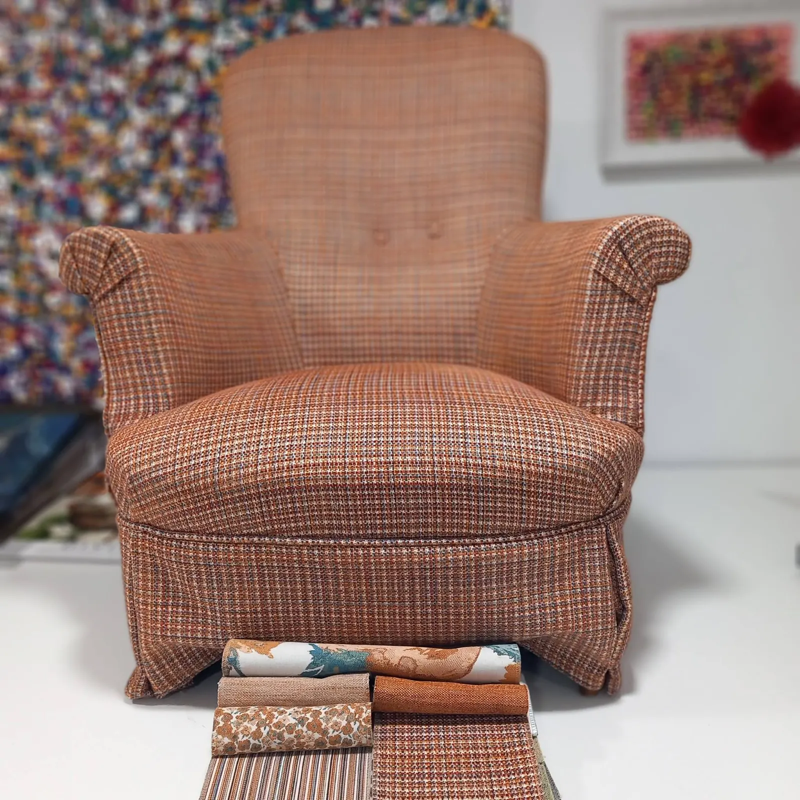
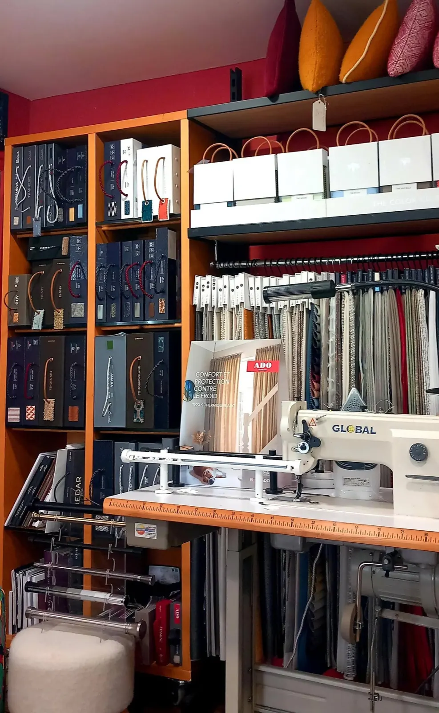
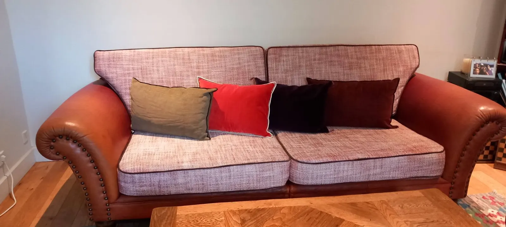
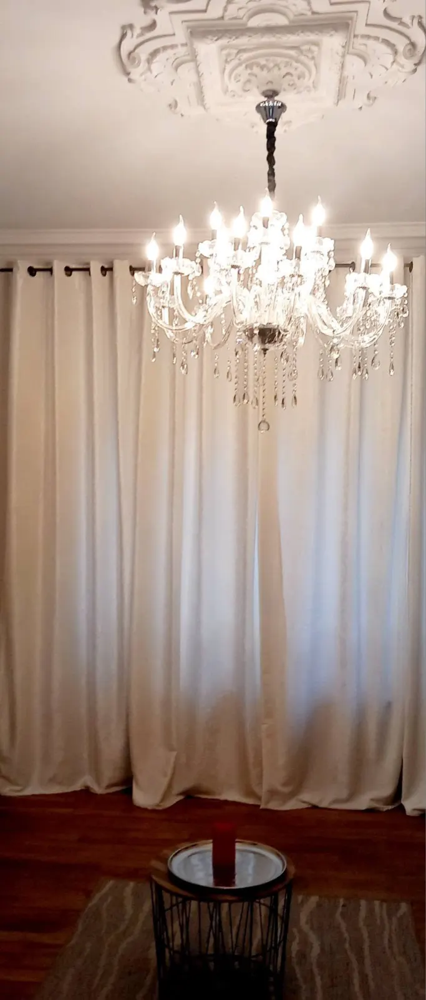
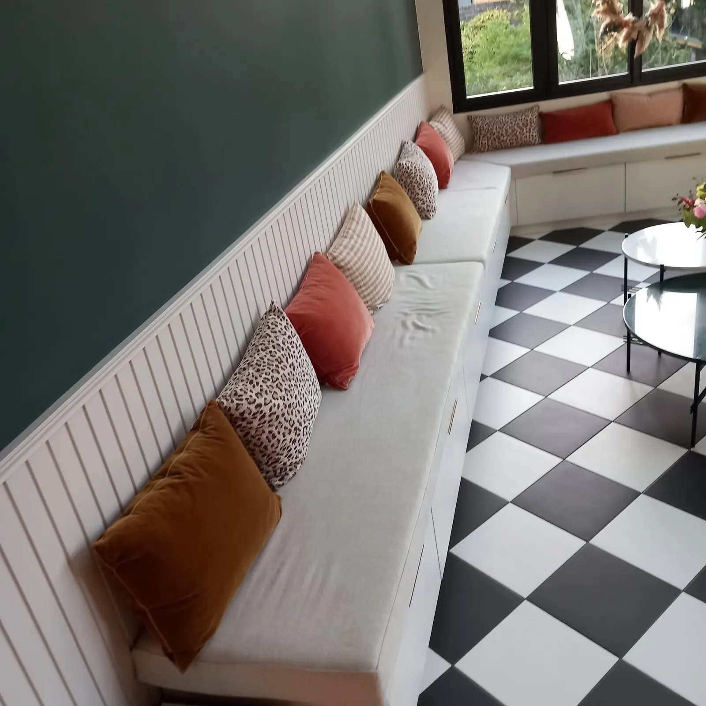
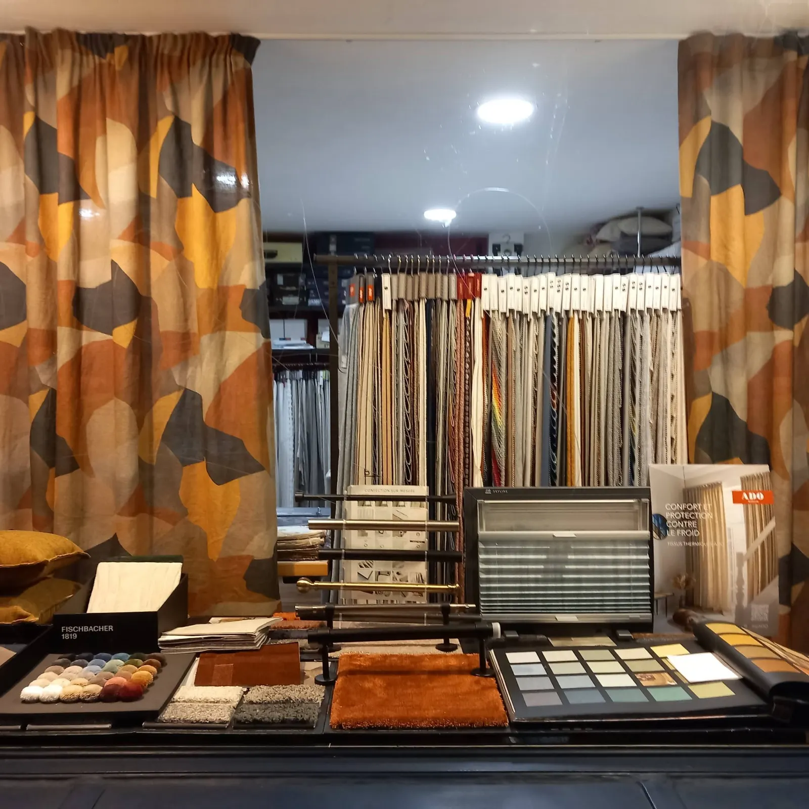
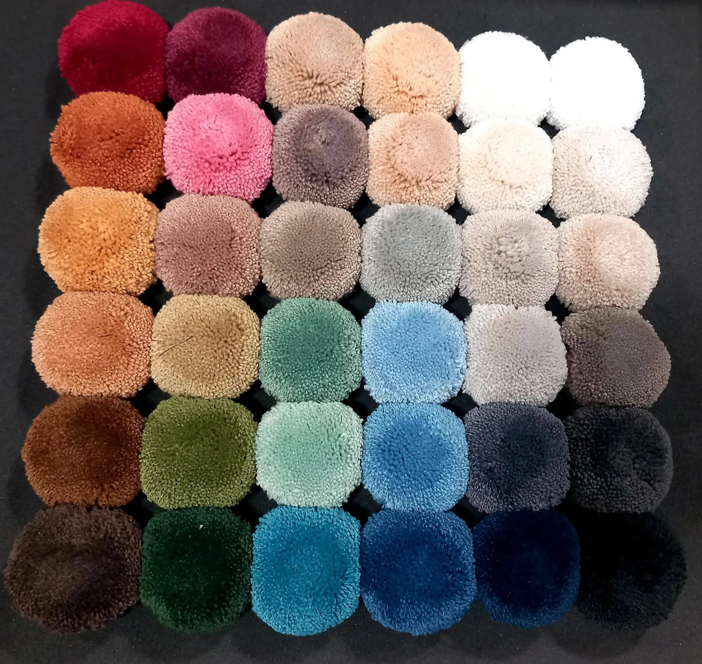
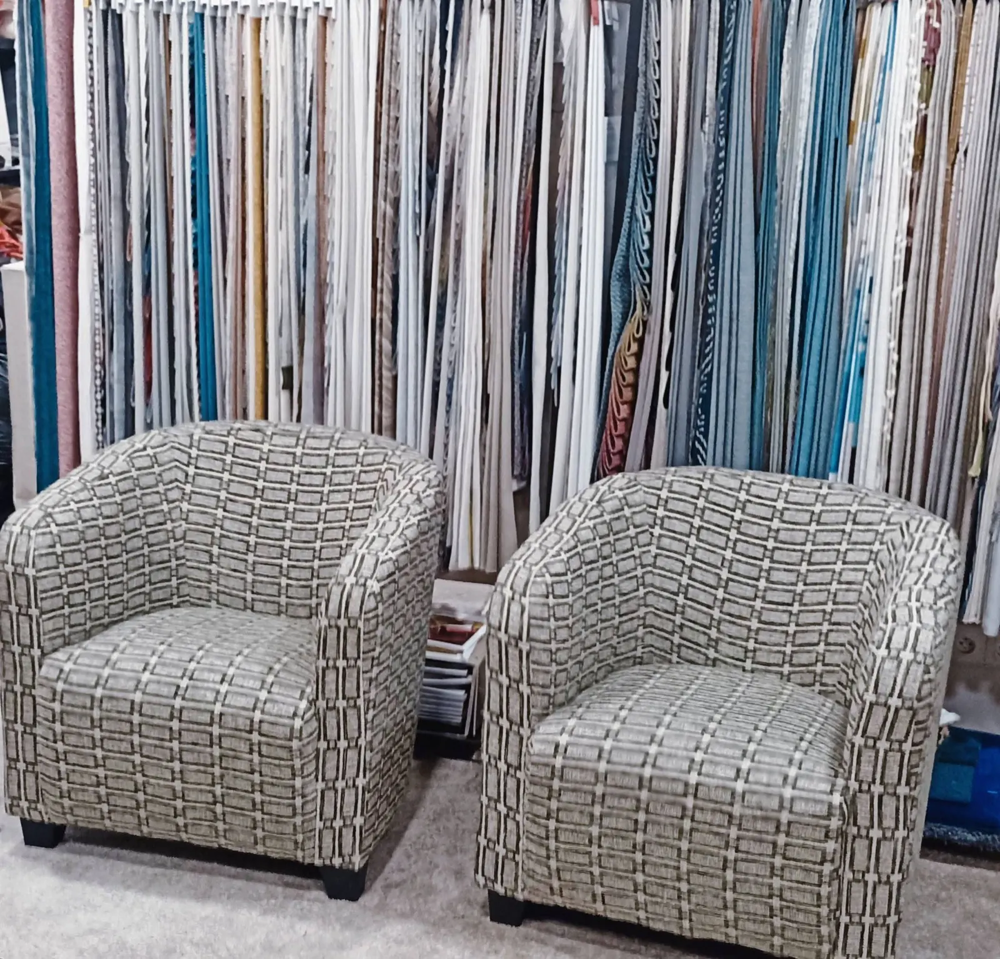

Redonner vie à vos fauteuils, canapés et rideaux.
Artisan tapissier décorateur à Rennes, entre le Thabor et Saint-Hélier. Réfection de sièges, rideaux et stores sur mesure, tissus d'ameublement au mètre : la Galerie Cyha vous accompagne du conseil couleur et matière jusqu'à la pose à domicile.
4,7 sur 5 · 15 avis Google
Fauteuil ancien, retapissé- Artisan tapissier décorateur
- 24 rue de Châteaudun, Thabor · Saint-Hélier
- Particuliers et professionnels
- Du conseil à la pose à domicile

Sièges, fenêtres, murs et sols.
Chaque projet est unique. Le savoir-faire de l'atelier se décline autour de spécialités techniques et d'éditeurs de prestige, pour les particuliers comme pour les professionnels.
-
Tapisserie et réfection de sièges
Redonner vie à vos fauteuils, chaises et canapés, anciens ou contemporains, grâce à un geste précis et une sélection rigoureuse de tissus d'ameublement haut de gamme. Confection de housses et de coussins.
-
Rideaux et stores sur mesure
Rideaux, voilages, stores, tentures, passementerie et habillage de fenêtres, avec des textiles choisis selon l'usage de la pièce.
- Thermique
- Dépolluant
- Occultant
- Anti-taches
- Non-feu, norme M1
-
Murs et sols d'exception
Papiers peints panoramiques et papiers peints d'éditeurs, tapis sur mesure, moquettes de prestige en laine et en matières naturelles.
Des intérieurs habillés sur mesure.
Un canapé repris dans un tissu chiné, une banquette garnie de coussins en velours, des rideaux plein jour sous un lustre : des créations durables, raffinées et intemporelles.



Venez toucher les matières.
Au showroom, on vous conseille pour choisir les tissus adaptés à votre intérieur, à vos envies et à votre usage. Une sélection de grands éditeurs, dont une collection de velours haut de gamme pour les rideaux, les sièges, les banquettes et les canapés.
- Tissus d'ameublement au mètre
- Tringles et rails
- Tapis et moquettes sur mesure
- Papier peint
- Décoration d'intérieur


Nuancier de tapis sur mesureLe tissu au service de vos intérieurs.Galerie Cyha, Rennes
Passez au 24 rue de Châteaudun.
Entre le quartier du Thabor et Saint-Hélier. Appelez ou écrivez pour échanger sur votre projet ou planifier un rendez-vous, ou passez directement en boutique.
